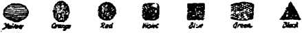

12, 1920, Vol. 1, No. 17 FtfblisKed every other ■ircek at 35 Myrtle Avenue, yetr York, N.Y., U.S.A, (Bareuffh of Brooklyn)
Ten Cents a Copy— $1.50 a Year Canada a Foreign Countries, $2.00
Volume 1 WEDNESDAY, MAY 13, 1020 Number IT
, CONTENTS of the GOLDEN AGE
LABOX ud ECONOMICS Killing th* Gooee_..................-...................—- .......
Comparison of Earnings and Prices of Foods..—„.w..518
SOCIAL and EDUCATIONAL 1 Prohibition at Work............519 Beautiful Hello laic_______
MANUFACTURING and MINING Building with a Gun.—.......523 . .
Tougher Steel........................524 Asphalt from Kentucky 524
1 FINANCE. COMMERCE. TRANSPORTATION
Patents and Business..........525 The Weary Sea Bird
Chain Stores........................528 (poem) ...................-
POLITICAL, DOMESTIC sod FOREIGN - „ A-a— Statistical Religion and
« Law and Order...-...............527 Prcsa.................._...528
AGRICULTURE and HUSBANDRY New Egg Preserver..............529 Killing Cutworms
Chemical Control of Weeds..520 Excuses! Excuses!
SCIENCE and INVENTION
.532
right" » Than cork ............531 The Longest Bridges.
HOUSEWIFERY and HYGIENE
Intravenous Medication Approved _____
TRAVEL and
RELIGION and
God's Inheritance In the Earth.™......-...637
MISCELLANY
“Wa’U Go to Jerusalem”....536
Curious Wage Phenomena..536
PHILOSOPHY
The Interebtireh Movement 640
Juvenile Bible Stud/...——.543
Ptibltahed «*«ry ether Wedaesdar at SI Myrtle Arena*. {Gero ef Brooklyn. N» w Ynrt. N. Y.. to WOODWORTH. HUDGINGS end MARTIN
Volume I New York, Wednesday, May 12, 1920 Number 17
KILLING THE GOOSE
WHEN the alien stream flows and ebbs to and from American shores in such a manner that the net gain in immigrants in a year is under 50,000, it becomes a question of importance. During 1919 the number of aliens that left America approached 200,000.
In the five years from 1910 to 1914 the aliens that returned home were 29% of those that came; in the next two years 37%; in the three years to 1919 88%. In other words, in the first period the conditions here suited the aliens so well that only one out of three went back home; in the next period two out of five left us; in the last period seven out of eight have left our shores for other lands.
It is said that many thousands are desirous of going to their home countries, but are hindered by a variety of considerations, including that of getting passports promptly. The number so minded is variously estimated from one to two million, and is reported to be increasing.
America has plenty of money—too much, some students of the inflation problem aver; and the money never would be missed, according to financial authorities, if each emigrant takes with him the estimated average of $3,000. On this basis, the 200,000 wanderers returning in 1919 took with them some $600,000,000. If the tide should rise and reach a million, the money taken away would reach three billion dollars. This sum, if taken in currency, might seriously embarrass even a country having the total money circulation of $5,998,000,000, that which the United States has: for it would be just half th? amount of circulation. If it took the form of foreign exchange, it would create a demand for three billion 'dollars worth of foreign exchange and migfit materially help a situation where London exchange is depreciated some 20%, Paris exchange 65%, and Berlin exchange at least 95%. When the three billion dollars got into circulation in Europe it would help the situation there just as much as a loan -of like amount from America, subject, however, to the drawback that Europe needs, not so much money, as the things that money can buy. But the three billion dollars put into circulation “over there’’ would be acceptable to Americans for purchase of American products, and indirectly would bring Europe some of the things that war-torn region craves.
In former days, when the annual immigration passed a million, the human flood that poured into cities and construction camps was not rich in money, but it brought to this country the kind of riches that a country requires for its growth and development—the same kind that the ebb tide is bearing back to Europe. That wealth was the power of strong, willing bodies and ambitious brains, the wealth that was transmuted into railway embankments, concrete work, good roads, coal from the mines, lumber from the forests, and steel and iron from the mills. Conditions seem now to have changed somehow; for that kind of wealth is getting chary of America, and inclined for the present to flow to South America, South Africa, and may shortly run in trickles, brooks and rivers into other sections-Mesopotamia, Palestine, North Africa, there in turn to be. changed into the permanent form that constitutes the real wealth of a nation. Meanwhile it is estimated that the 40% shortage in things done in tills country is owing in considerable measure to the choking of the flood that in the past created the wealth of America.
Immigration is the goose that lays golden eggs of national wealth. It was expected that after the World War there would be a tidal wave of immigrants and an abundance of the riches that strong muscles create. There seemed every reason why the people of poverty-stricken Europe should come here. Capital would be depleted there, but plenteous here. Mills and railroads would be worn out there, but well kept up here. Money and credit would be scarce in Europe, but abundant here. Is some one killing the goose, and is America not to have the golden eggs, after all?
The lure that drew across the ocean the multitudes that have done the basic work of rich America was, first, the opportunity to make a good living. Many an immigrant knows the disappointment of seeing that the streets of America are not of gold, but like other streets. But the gold was in the mills and the mines, and the aliens went to work with a will to save the little money that would make them rich at home again. And in the palmy days of immigration two out of three decided that America was better than Europe and stayed here to make it their home, with their children and their children's children.
Many came to the Western Continent because within them was the urge of freedom. These people make the true Americans; for was not the nation founded by men and women who braved poverty, hardship and loneliness, to live in an atmosphere not polluted by tyranny and oppression? It is said that these people are not coining so freely as before the war; that Europe is being republicanized and freed from the autocracy of kingship, nobility, wealth and priestcraft; that it is needless to sail three thousand miles for freedom; and last, but not least, that workingmen can get $9 a day in Poland and in others of the newly bom nations.
The feeling is rife here that America has not been as thoughtful for the stranger in her midst as she might have been. The people here have been so busy making their own living, and having their own good time, that they have forgotten the lonely, queer figure on the back street —quite regardless that not seldom the stranger was possessed of education, talent, ability out of the ordinary that would make him an acquisi-tion~4p any group. On the whole the man from across the water was a man to he shunned, because—"Well, he isn’t in our set”.
But the past is to be ‘‘bygones”, and now. at last, the alien is to be made "one of us”. He is to be m^do ihto an American. Ho is to bo taught English.-iStatistics recently compiled show that he is 80% as substantial a citizen as any one, 15% Socialistic, and 5% a mentioner of overthrow of government. Now he is to be made to feel the big-brotherliness of the people here. Not that he is to be welcomed into any American home, but Americans are to be sent into hia home—circular distributors, notice- servers, literature carriers, slummers, paid uplifters, English teachers and—spies; for must not the 20%' or at least the 5% be “rooted out of the land”?
Great, say some, was the blame of the foreigners! They came to this country of liberty and equality to find every door closed socially. They were guilty, says the National Security League, of the following “removable causes”:
“1. They did not learn the English language, and so could be deceived oftentimes by the vicious of their own race [the u%].
“2. They congregated in foreign quarters and did not learn American ideals, so they did not know of the opportunities of advancement.
“3. They spent their time talking over the grievances of the old land, and were thus led astray by revolutionary propaganda not needed in America [the 1-5%].
“4. They sent their money to other countries instead of building up their homes here [about 30%].
"5. They did not realize that if any injustice is being' done to any in the community, there is a law to which to appeal for the righting of the injustice” [see articles on “Justice and the Poor”].
Incidentally, if the foreigner got to living with native Americans, the priests found that they could not hold him in “the church,” as they are unable to hold the children and grandchildren of immigrants. For if, for example, the alien miner in a coal region should become Americanized, he would not believe that the priest could “change him into a pig’. And the eternal salvation of the foreigners, and of church revenues, depends on eternal ignorance of America and American ideals. To a large extent this influence is responsible for the stunting of aliens as regards the high ideals of the land to which they have given themselves. For fresh immigrants constitute the chief additions to Bomanist membership, and a stoppage of the flow would affect the plans of the hierarchy.
Means are planned for regulating the immigration tide. Government regulation of immigration would seem to those in authority as essentia] as of food, railroads and trade. Care is to be taken not to restrict the flow in a manner to hinder business. According to the Textile Review the proposed rules are to cover:
The complete suspension of all labor immigration for two years or more.
Regulation of immigration then on the basis ‘ , of a certain percentage allowed from each 'country, by which from 3% to 15% as many immigrants may be admitted as there are al. ready aliens here of that nationality. This will make admission a privilege, it is hoped. The percentage, with other matters, will be set annually by an immigration commission.
Immigration officials are to be sent to the countries whence immigrants seek to come, to keep foreigners from starting who might be kept out on arrival.
Standards for citizenship and naturalization . are to be raised, and a wife’s citizenship is to be separate from her husband's.
Laws discriminating against certain nationalities are to be repealed, so as to remove pres, '■ ent causes for animosity from the Japanese, Chinese and others. Besides, Chinese and Japanese labor will help out in the industries of ■ the country. This will do American labor little harm, if the immigration commission is controlled by persons appointed by or in sympathy with working men; for the percentages will be controlled and varied to suit sliifting conditions. If the farmers and workers vote themselves into *’ control of the administration in November, this X feature would be certain not to interfere with the interests of American labor.
A thoroughly restricted immigration would dissipate or destroy something for which America has over stood. This country has always been a Mecca for the oppressed and for those persecuted for religious or political reasons. It would be a distinct loss to humanity and to American prestige among liberty-loving people for such a thing to happen. But the drift may be sensed in the now-forgotten veto by the President on the immigration bill of January, 1917, - when the veto message ran:
’•'The bill exempts from the operation of the literacy tost all aliens who shall prove to the satisfaction of the proper immigration officer or to the Secretary of Labor that they'are seeking admission to the United States to avoid religions persecution, in the country of their last permanent residence, whether such persecution be evidenced by overt acts or by laws or governmental regulations that discriminate against the alien or the race to which he belong^ because of his religious faith. . . . 'Phis provision separately and in itself renders it unwise for me to give my assent to this legislation in its present form.*7
r . . The principle of a special welcome to the oppressed, in the provision objected’to in the veto, has been one of the foundations of American ideals; its negation 300 years ago might have excluded the little band that sailed from religiously inhospitable ingland to Massacnn-sett’s then unknown shores. In the hands of Roman Catholic officials the administration attitude would effectually debar any sincere adherents to their faith who might not have been welcome in their home country, and would cast many Jews back into the fires of the persecutions from which they fled.
In foreign lands the word is being passed around that alien workers had better endure the troubles they have than fly to others they know not of in America. It is said'that this country is being quite well advertised as very reactionary, as a place which seekers .after freedom would do well to avoid until distrust of and agitation against foreigners abates. Something like this has happened several times when American conditions were temporarily unfavorable. Immigrants stopped coming in a measure during the Civil War, after the Chinese exclusion act, after the contract labor law, and during various industrial depressions. It is thought that fully a million and a half may not merely forbear coming, but actually leave the country. This may create a serious condition, when the (country is short 4,000,000 workers for the normal development of industry and construction.
The Straus Investors' Magazine says:
“If we are no longer supplied with the yearly million of new-come immigrants, who formed this class from year to year, one of two things will happen: either thin work will be done by a class of native-born workmen who will tend to form a separate class of casual workers— which past events show would be a serious economic and social danger—qr we shall not have enough men to do this kind of labor, and new development work will be seriously crippled. No one can be certain as to what will come, but it is certain that serious consideration must be given to the question, and it will be generally agreed that everything possible should be done to make this country attractive, under proper restrictions, to the better class of new blood from abroad.
“Although we have viewed with some alarm the large influx of foreigners, especially of the more ignorant classes, still it has always been, a source of national pride that so many of the oppressed peoples from all over the-world should find in 1 his country the opportunities.and attractions which they could not find elsewhere. We have prided ourselves on being a haven for the oppressed and a land of opportunity for the,ambitious. Wc sec no reason why this should not be as much true at present as in the past. But now immigration seems practically to have stopped, if the tide has not set definitely the other way.”
This country may soon have to give profound attention to the fact that another virgin country of vast extent and of at least as great natural opportunity for the ambitious worker is now beckoning to workmen, to the poor and oppressed all over the world. The New York World is sponsor for the statement that conditions in Russia are good for working people, and that the poor there are probably better off than they have ever been. Perhaps the tide of the world’s ambitious workers which has long flowed America-ward, is about to turn to the exploiting of another Mississippi Valley, to the development of another Rocky Mountain region, to the settlement of another Great Plains—in Russia and Siberia. If so, this country would do well quickly to make the stranger within its gates feel once more that America is the land of
opportunity and freedom for him, to make the alien feel that this is ‘’home”, that he is welcome here, and is to find, not hard-hearted taskmasters, but genuine friends in mill, shop, store and home. .
America will open her heart to the stranger ■—but it will be in the Golden Age. In those days no matter who steps down the gang plank, he will be made to realize that he has fallen among more than friends—among brothers; for it is not far off when the realization will come of a law spoken thousands of years ago, "The Lord your' God is God of gods, and Lord of lords, a great God, a mighty, and a terrible [to evil doers then], which regardeth not persons, nor taketh reward; He doth execute the judgment of the fatherless and widow, and loveth the stranger, in giving him food and raiment; love ye, therefore, the stranger."-Deut. 10:17-19.
Comparison of course of average weekly earnings in New York State factories with the course of retail food
prices in the United States. ‘Drop in January due to fueMosing order January 18 to 22, 1918. QThat in November due to closing of factories on November 11, 1918, Armistice Day.
•/ Siatutia aad fafarmatioa of lie York StiU fadu&iU CaMi'uitt)
ROHIBITION has grown into the dignity of an institution, like the Constitution, of which it is now a part. It has been functioning for some months, and an appraisal of the workings of the new institution is of interest.
Like other changes, this permanent drought has injured certain industries and destroyed others. Grape culture languishes, as does that of the hop. The billion invested in the liquor business fortunately is not entirely gone, but what is left is directed into more useful channels, if the alteration of breweries into soft-drinks factories can be called useful. Other adjuncts to the industry have taken leave. No more does the Keeley cure flourish, and homes for inebriates have been turned into other kinds of homes —a benefit doubtless in the existing scarcity of homes for the people. The police industry is apprehensive, as the arrests lessen and police > commissioners decide on a decreased personnel.
Genius wilts, and the poetry business may suffer a relapse; for what would Poe have done without his daily potations? Swinburne was V fortunate that England was his habitat; for* according to the poet Sadachi Hartmann:
“That the soul uplift and inspiration without which no great work is ever achieved, comes from some stimu-< * lant; that our hidden self, our subconscious mind, can rise to no great endeavor unless so influenced; and that to the masters in art and letters alcohol has given this psychic impetus is a matter of history.”
Concluding, he says, in language as plain as a mental alcohol mist:
“And so, granting that for some the plaudits of the . crowd give the needed kick to their sleeping talents, that to others the psychic reaction comes from the expectation of immortality for their embryo achievements, to many more the awakening of genius can only be accomplished by the magic that lies in the cup. This prohibition will deprive the world of art and letters of many a song from the soul from which the umbra might be lifted by the warmth that comes with imbibing.”
Too bad! Perhaps somewhere outside the three-mile-^ limit a sanitarium for genius may yet be provided.
Worse yftt, the coal strike was due to prohibition, according to the British press. And ; still darker:
“Prohibition preceded the revolution in Russia, and prohibition in the United. States preceded the biggest attempt at revolution yet made in that country.”
. Perhaps for the first time the Russian people got out of their government-fostered befuddle-ment and began to think. Are the British newspapers and the powers of reaction afraid that America sober will begin to use her brain? And what will one of the great religious denominations do without its saloons?
The American people, so say the calamity howlers, are irritated over the new institution. According to one writer:
“The compulsory abstention from spirituous liquors is the subject of daily conversation. A sudden change in the habits of the average citizen, particularly when enforced against his will, is bound to cause irritation and evoke protest.”
A pledge was signed all over the country:
“Believing that the. Constitutional Amendment passed by Congress and ratified by a majority of the States is an infringement upon my personal liberties, I hereby pledge myself to vote against any candidate for public office, regardless of party affiliations, who favors its enforcement.”
The habits of some of our elder brethren have suffered a ruthless break, as bad as when the supply, of “dope” is cut off from the morphine fiend; for King Alcohol belongs in the same drug category as Queen Morphine, Princess Opium, and the rest of the Vice family.
The Wall Street Journal is authority for the suggestion that prohibition may practically ruin the American shipping industry:
“Steamship men are pessimistic as to the future quality of sailors on ships trading with the United States. No sailor wants to sign up for a trip here if he can possibly help it. The pick of the sailors in the trans-Atlantic trade is now signing up to go to South America. Prohibition enforcement caused a near riot recently on a ship in Boston from an Italian port which was manned by an Italian crew., Under the ship’s articles the crew was entitled to be furnished a daily ration of rum. The customs officials under the new law were obliged to require the captain to Real up all liquors while in port, forcing the ship to violate its contract with the crew, with results that can well be imagined. There is no expectation that any member of that particular crew will ever sign up for a trip to the. United States again.”
Other industries are affected, or are liable to
lx*, by prohibition. Millions of workers from foreign lands, who have been accustomed to wine or beer, consider America a less desirable place to live in than it was, and emigration on a huge scale is hinted at. It is more the infringement of personal liberty and the fear of further restrictions by sumptuary laws than a longing for liquor that actuates millions of people. The lengths fanatical extremists may go to may'become a real menace. Already a small army of prohibition spies is asked for, some of whose deeds have had headlines in the press in sensational affairs. The matter goes into the citizen's castle, his home; for rulings are in effect that fruit juices and ciders come within the law if they contain over one-half per cent of alcohol, and violation of this ruling carries the same penalties as though it were the regular manufacture or sale of stronger liquors. Let the farmer and the housewife beware lest their canned or bottled juices begin to “work"; for the one-half percent limit is quickly reached. Any home may be searched for such "liquors”; and under conditions where the owner is unpopular, information might at any time be lodged that would cause the distressing publicity of a “raid”, if nothing worse.
From every direction come reports of beneficial effects of prohibition. In ten Massachusetts cities the arrests dropped 80%, from 4962 to 805 within a month. Springfield enjoyed a decline, of 85% in crime. Similar figures are given out in Cincinnati, Baltimore, Chicago and New York. Accidental and suicidal deaths have fallen off. The promised increase in drug fiends has not yet materialized, though there are indications that it exists. The jail at Lowell, Mass., was closed and twenty employes found better work. The Taunton, Mass., jail has no inhabitants. In Columbus, Ohio, the city prison has been vacant. Mouses of correction are being closed. Atlantic City has averaged not over one arrest a day.
The parole breakers and wife-beaters have quit. The police are relieved at the sudden lessening of the dangerous features of their work: for, according to them, the Saturday night “^ruhks" no longer have to be rounded up and tended "hntil sober, the singing victim and the pathetic crying “jag’’ are no more, the dreaded “fighting drunk” has turned pacifist, the drunken flirt no longer tries to charm the ladies, and the profane and “wild-west” “drunks”
are not found. Accidents are diminished. The police have less to fear from the intoxicated chauffeur and truck driver. Mine operators no longer chart the homes of workers causing dis- < ?
astrous accidents, only to find them grouped ‘ about the local saloons. Railroad managements : sleep more sweetly; for the danger of holocausts is practically over, as far as they may be attributable to drink.
The health of the people is bound to manifest improvement. Mortality and disease statistics will not be available till the end of the year, but ’ t the absence of alcohol as an irritant and dead- . >
ener of tissues should cause a betterment in the bodily condition of millions of former addicts. The burden is lifted from the families of men that once spent their money for drink, and I
mothers no longer dread the possibility of their >
boys having their careers ruined by influences ! impossible to control. If the Golden Age Were here and the whole world had the new institution in force such a scene as was reported in a London dispatch could not have happened:
“Virtually the entire male population of the village' of Lagrana, Spain, was in a state of helpless intoxication for three days recently, the fishing industry and all other work being at a complete standstill. Owing to the stormy weather a number of cases'of spirits laden on incoming vessels had been washed overhoard. The casks were , • picked up by villagers, who assembled in a building and consumed dozens of bottles of* brandy, rum and other ’ spirits. At the end of six hours the crowd was found lying about the floor in an unconscious condition.”
In some respects these Christians might learn lessons from the heathen; for it is certain that nothing more discreditable was ever seen in a settlement of American Indians. -
Yet there is a powerful political reaction to get the country hack toward the condition of ? Lagrana. The issue raised, however, is not the direct one of pro-liquor, but that of personal liberty, and with considerable justice. There was seldom a drunken man who would not volubly protest his personal right to drink and > to get drunk, regardless of the personal rights of his family, his employer, and other people transgressed upon by his condition. But the new ; issue goes to the roots of freedom. As ex-Mayor ' Raymond, of Newark, puts it:
"Thore is a tremendous wave of reaction against , ’ prohibition from one end of the land to the other. lam ■ ' not interested in any candidate for nomination who does ; . not .stand openly and valiantly for the personal liberty of the American citizen. Let us demand candidates for t
President and Vice-President who not only stand for this, but believe it and are real men enough to say so.”
The “dry” question got promptly into the courts; and Rhode Island took the lead with a preferred suit to test the constitutionality of the new institution, saying that she ‘'desires to sue the United States on the ground that the Prohibition Amendment takes away the right of that sovereign State to regulate her own affairs, and to appeal, too, on the ground that when Rhode Island ratified the Constitution originally she did so with a reservation that she would control her own affairs". “States rights run mad,” was the comment of a Southern editor on the Rhode Island "dry” argument.
However, ther$ are powerful interests, from Wall Street to the Vatican, back of the movement to destroy prohibition. Eminent lawyers are employed, and even the Supreme Court is reported to have promised to rush a decision on the Eighteenth Amendment. Governors of States are lined up with the “wets,” promising the people that everything will be done to irrigate the desert as quickly as possible. State legislatures are passing obviously unconstitutional laws providing for 3% and 5% liquors, so great is the scramble to be found on the “right" side of the question whether again to start the people toward the degradation and distress of a drink-sodden nation.
And why! The matter has developed into a elean-cut religious issue. On both sides the armies a re-falling in to line. The Roman Catholic Church, to whose members 85% of the saloons, breweries and distilleries belonged, through its bishops denounces any candidate for office who has the temerity to have dealings with the prohibitionists. A thousand Protestant clergymen of New York State, signed a statement that “New York State is the danger point in the whole nation, and New York City is the danger point in the State” in the “tremendous struggle now .on for the retention, protection and enforcement of. prohibition”.
The Christian Advocate puts the
shoe right on and openly admits that the prohibition-amendment movement is a political affair of ^he Protestant churches, saying:
"It has scarcely been a generation since the Protestant bodies of this country drew together and formed the Anti-Saloon League for the defeating of the liquor traffic. That was a form of federation unknown up to that time among religious bodies. But the leaders of the churches had fought single-handed the enemy of the home and church and state. They had made small progress. They needed to get together. One grand frontal attack by the united bodies of Protestantism could not only make a dent in the armor of John Barleycorn, but put him down and dispatch hint. That policy had been demonstrated as of the most profound wisdom. The Anti-Saloon League, representing the combined efforts of the [Protestant ] Christian churches of America, has performed its function to the great delight of all good citizens.”
Thus has Protestantism been enticed under the guise of doing good with political tools, into what amounts to the same kind of union of church with state that they so loudly denounce in their Romanist brethren. As says the Washington correspondent of the Boston Transcript:
“Consider first that the Anti-Saloon League is the cleverest, shrewdest and most efficient political machine ever built up in this country. I do not question the perfect right of all of them to advocate and fight for prohibition, nor their right to insist on enforcement of the eighteenth amendment. I am merely dealing with political tendencies that may have to do with our larger liberties. And I suggest that if the Anti-Saloon League, with all its vast power, is the political arm of the organized evangelical churches, and at the same time controls the [Protestant] church organization, then we have in effect a combination of church and state in control of government, and that combination always has been and always will be a menace to liberty, no matter what church it happens to be.”
And the Protestant churches intend to make further use of their political machine. The AntiSaloon League has finished what these churches set out to do under that name. In the same editorial quoted above, the Western Christian Advocate continuing intimates the further direction that the activities of this organization Mull take, under another name:
“Now comes another alignment of the churches of Protestantism under the organization of the Interchurch World Movement. There is a coining together to organize for a task that has been approached by the denominations singly. In that capacity they have met with comparative failure. Their responsibility was too large for any one of them to carry alone. What one of them could Christianize America? Could any two of them work the Christianizing of the heathen world? Could any groun of them undertake successfully a program of reconstruction that would be ample for the nations when the peoples of the earth are staggering under the heaviest load of doubt and uncertainly they have ever carried? The organization of the Anti-Saloon League was eminently providential. Time has vindicated its claim. The same method has been used in the formation of the Inter ch arch World Movement. We are trusting that this is of God also. The churches get together for the purpose of leading one united drive against the forces of ignorance and the resurgence of paganism. Federation and alliance and cooperation and a united leadership mean the solving of the problems that have hitherto checked our progress. Time will vindicate our faith?’ There is much more to this prohibition movement than appears on the surface. Very likely the men back of it mean well, and most of them seem sincerely desirous of doing great good. But anything approaching a union of church and state, such, for example, as a church in politics, has invariably created worse evils than it cured, as the Anti-Saloon-Interchurch zealots will discover. Theirs is not the method that will bring the Golden Age. Rather they would hinder it, if such a thing were possible; for it is coming, and coming on time.
Beautiful Belle Isle By b. e. Rockhoff
ELLE ISLE is Detroit's playground, not because it is the only park the “city dynamic’’ has, but because on Belle Isle, or “The Island”, as all Detroiters call it, are found all the necessary conditions for the thorough enjoyment of the out-of-doors, be it a stroll through the woods, a boat ride, bathing or athletic sports, and at the same time there are to be found all the modern conveniences of the city.
Belle Isle is located on the Detroit River opposite the foot of East Grand Boulevard, with which it is connected by a bridge. It is easily reached by street car, auto, or ferry boat.
The Island is over two miles long and about a half mile broad, and its area is over seven hundred acres. By the process of filling in, the city is adding four hundred acres more. Near its center a boulevard extends from one end to the other, and a good road surrounds it, besides which there are many shady lanes and by-paths. Tlie^principal ways on the Island are not its boulevards and roads, however, but its waterways. There are miles and miles of canals with grassy banks, which connect with two lakes and also with the river. The beautiful bridges spanning the canals do much to add to the charm oj the scenery.
On band concert nights a most unusual sight is to be seen. A band-stand is built on a bridge over one of the principal lagoons; and while the sweet strains of music float out on the air, thousands of people are sitting idly in their ornate canoes, piled high with embroidered and >. many colored cushions, while other thousands are seated in their autos on shore and other thousands of less fortunate ones occupy the benches on the canal banks or sit on the spacious' lawns. The encore is a deafening medley of tooting auto horns and screeching sirens.
A trip around the island reveals many things of interest as well as the great variety of means for enjoying out-door life. There is the Casino . with its broad verandas filled with chatting people sipping sodas. Then there are the domed horticultural building, the aquarium and the zoo, where many of the wonders of God's creation in plant and animal life may be seen. There are the yacht club, the boat clubs, the bathing beach, athletic fields, recreation buildings, picnic grounds and real woods with wild flowers, birds and squirrels. The squirrels are very tame, and even some of the birds will vie with the squirrels in getting peanuts out of our hands. No doubt, when man’s present destructive instincts are overcome and animals are no longer ’ hunted, they will all be tame.
As we skirt the river we see the never-ending procession of watercraft passing. Great and grim freighters, sedate passenger steamers, and gaudy excursion boats with bands playing and flags flying, and now and then a dignified private yacht will slip quietly by; and darting in and out among all these are the little popping and snorting speed-boats. A greater tonnage passes Belle Isle each year than enters the harbors of New York, London and Hong Kong combined.
Even in winter the Island is Detroit’s playground. Broad expanses of white snow replace the green lawns, and skaters with sweaters and caps replace the hatless, shirt-sleeved canoeists.
Probably no city in the* world can boast of such a park; for it is wholly devoted to outdoor pleasure. The Island is entirely separate from the mainland and is kept solely for the purpose of giving Detroit people and their guests real outdoor fun at all seasons of the year.
In rhe Golden Age Belle Tsle will no longer enjoy its present unique distinction; for then even the desert shall blossom as the rose and all the solitary places shall be made glad. A perfect people, with perfect health and happiness amid perfect surroundings will then enjoy life everlasting, as a result of the death of our Lord.
» * ■ ■■ ■ ■ * ■ ■ • ■ ■ ■ ^ ■ « P I J ■ «« 1 « • 1 • 1 ■ 1 ■ 1 *■ ■ ■ a ■ ■ ■■»■■«».w ■! ■ « «www*ww • * **»j
Building With a Gun
HIS gun shoots, not bullets, but cement, and is reported to do certain work in building operations more cheaply and quickly than anything hitherto. It was first tried in 1910, gradually improved, and now is a recognized method of good building construction.
Least of all things does the cement-gun look like a gun, but more like a partly conical tank over a cylindrical fireplane, with a hose coining out near the bottom. The cement and sand are mixed dry, and blown out through the hose to the point of application. Just as the mixture reaches the nozzle, water is introduced into it, and water, sand and cement are blown together on the surface which is to*be covered with cement. The particles of sand act as tiny rammers to condense and compact the cement already attached to the surface. After ramming the cement to the unusual density that characterizes the cement, or gunite, as it is termed when applied by this method, some of the sand rebounds and drops to the ground. After application the substance quickly hardens in position.
The strength of cement put on with a cement gun is extraordinary, being three to five times as strong as cement laid by the ordinary hand method. It is a perfect process for applying cement to old surfaces; for there is no difference in strength between the body of the cement and the line of application. When one section is joined to another, the joints are as strong as the rest. The reason is that the cement is shot with a pressure of 35 pounds to the square inch, and penetrates the underlying surface. Of course, the surface to be cemented is first thoroughly cleaned with the cement gun, used as a sand blast.
On^of the first uses of gunite was in the fire and rust protection of the heavy steel in the lower levels of the great New York Central Station in New York. The columns and girders were coated two or three inches deep with the cement afia cost of about 15 cents a square foot. The work-is permanent because the cement is so dense and adheres so closely to the steel that moisture cannot reach the metal, a result unattainable with paint or concrete. The steel work in the famous Woolworth Building in New York is also protected with gunite. ■
The new cement is successfully employed in putting a cement exterior on houses. What are practically solid cement walls are quickly built up with the cement gun, walls that are moisture proof and have no joints, seams or surfaces^ subject to disintegration. Unlike ordinary concrete walls the porous wooden forms used in pouring concrete walls are needless. Only one light back wall is necessary; the wire netting, or other metallic reinforcement is placed properly over the wooden background ahd the gunite shot at the surface. In an hour a solid cement wall can be built out to a thickness of several inches, then scraped or smoothed down, and finally • finished with a thin waterproofing or ornamental layer of white or colored cement, resulting in a building of Unusual attractiveness and solidity. Brick, tile, stone and wooden buildings may be resurfaced by the new process.
It often happens that stone, brick, or concrete walls or foundations in exposed positions wear away, or deteriorate to a depth of several inches or more. The cement gun repairs such wear and tear quickly and economically, and it has been employed on worn bridge abutments, foundations, cement piles, and the surfaces of dams and sea walls. Gunite may be seen protecting the stone sides of deep railroad cuts. It covers the sides and walls of mine passages. It protects the shafts and timberings of mines and of structures where there is a fire hazard. It furnishes a waterproof lining to the canals and ditches of irrigation systems, and to leaky reservoirs. Protection is furnished in chemical works against the corrosive action of chemicals. Ships are built with it. Coke ovens and blast furnaces are repaired with it. Its uses, in time, will become innumerable.
For ages the world has been looking for the ideal building material and the ideal building method. Perhaps in gunite and the cement gun lies the great forward step in the building industry; for in the Golden Age ten homes must be erected to one now, and when people are planning to live forever, as 'will ultimately be the case in the good age coming, houses must be of the most permanent character—such structures as are built of extremely dense hard and durable products of the the cement gun.
As the timber supply becomes more and* more depleted it is fortunate indeed for a needy world that cement comes forward as a suitable substitute for building purposes.
STEEL is variously defined on the bases of the amount of carbon in the iron’and of the qualities of the alloy; for steel is an alloy of iron and carbon. As usually manufactured, steel has lacked in uniform consistency, causing uneven wear and strength; or in strength it has lacked the hardness or toughness requisite in the often rapid operations of efficient modern manufacture. The effort has been made to produce steel that would possess the proper quality to fit it for certain lands of work to which iron was unequal. Purer and more uniform steel was finally made by the crucible and electric processes.* Harder, stronger or tougher steels were produced by alloying the basic steel with certain metals. An immense variety of experiments were made, and certain alloys of steel survived as the fittest, and are widely known among steel men. Among the best known are nickel steel, vanadium steel, chrome steel and tungsten steel.
During the war, when expense cut less figure than with a country legally at peace, a formerly - neglected element, molybdenum, was alloyed with steel, with gratifying result. In the past molybdenum had gained a bad name on account of its associates: for with it there had been certain impurities that ruined the steel with which the molybdenum was mixed. When further experiments were made with pure molybdenum, the alloy of molybdenum-steel was found to be remarkably tough. Plates of this alloy might be quite thin and yet impenetrable to bullets, so the British tanks were encased in molybdenum-steel, against which machine-gun bullets streamed without effect at 30 foot range. In the United States the crank-shafts of the Liberty motors were reported to be made of this alloy. So tough is it that a cold axle was twisted six times around without breaking or showing cracks.
The^ future of this alloy depends on the price and the siipply: for during the war it ranged from $4 a pound up—a price too high for peace purposes. It may find a place in various parrs of automobiles, trucks and airplanes, where great toughness is indispensable at any price.
As the day of preparation for the Golden Age advances, progress is made to an unbelievable extent in every line of endeavor that is not fettered by limitations of thought and research. When the shackles of the past and the present are all broken, the advancement'that will appear everywhere will be astonishing.
ENEZUELA and the asphalt trust are the . thoughts that flash when asphalt is mentioned. It is new to think of this sticky blackness -as a home product. But in Edmons"on County, on the Nolin River, some 70 miles south of Louisville, the Kentucky Rock Asphalt Company is blasting asphalt rock at the rate of 1,000 tons a day.
Once there were in Edmonson County the sands of a dried-up sea, which instead of forming into ordinary sandstone, became impregnated with petroleum. The volatile oils have long since evaporated, but the heavier constituents remain, in a bed of rock dozens of feet thick.
Now that the country is about to embark on good-road building running into the billions of dollars, there arises a hungry demand for such asphalt as Kentucky can supply. There is an immense quantity ready for the dynamite. The preparation is simple. The soil covering of rock bed is swept away by hydraulic nozzles throwing water at 140 pounds pressure. The blasted rock is broken and pulverized, and is then ready for use.
On the road the pulverized asphalt rock is laid over a broken-stone or concrete base or upon an old brick or cobble street. It patches holes and worn spaces in old asphalt streets and avenues. Worn-out macadam streets become like new when surfaced with it. Heat is not used, but the powdered stone is spread nut and rolled cold under the ordinary road-rollers.
Ten years ago no one would have thought of making successful use of the asphalt of the Kentucky field: for as mere asphalt it is not usable. But sudden call for better roads immediately brought into favorable attention this remarkable, because already prepared, road material. Mother Earth has within her bosom many like treasures, which as field after field of opportunity opens up in the Golden Age, will come forth for the good of man.
PATENT is a kind of government insurance on the reward of ability; This definition took form before the day of big business. Now it is stated that the 17-year limit upon a patent is something to protect the public against the rapacity of patentees. Still another explanation is that a patent is a device for keeping the public from getting the benefit of a patentee’s improvement—this owing to the proneness of “important" corporations to buy up patents to keep the new idea from displacing their own products. Again, a patent is a plan for letting piratical competitors know exactly what you are doing, so that they may cover the market before you can.
Whatever a patent may be, the present crisis, with its perplexing flux in the elements of the entire social order, seems to call for a new appraisal of the patent situation and a fresh arrangement suited to the interests of both the ■ inventor and society.
There are seven objections to the present patent grants:
First,in a competitive system of manufacture and trade, a monoply such as is obtained through a patent is inharmonious with the general arrangement. Under the New Zealand patent law any one is permitted to manufacture the article patented, but each manufacturer ' must pay the inventor a royalty. This in most instances gives the inventor a larger return than under the American law, because he receives a profit on the product of many factories in contrast to the limited profit obtainable in the average inventor's little shop. The public immediately obtains the benefit of the inventors skill on a scale commensurate with the real importance of the device.
Second, by the present system great and important businesses may be disturbed, injured or ruined by the appearance of a new invention. This difficulty is inherent in the nature of things —a new ‘device must displace an inferior one. But by tlie New Zealand plan, a business that might otherwise be injured could add the new invention to its line of products, and both it and the inventor secure the benefit of his ingenuity.
Third, patents now cause an endless amount of litigation, the incentive to which would disappear under the New Zealand plan, because the fear of injury to established business would not exist, and the patentee could collect his royalties through a simple application to the proper government bureau, which would compel an accounting and settlement on a just basis.
Fourth, patents now benefit the capitalist at the expense of the inventor. This is so great an evil that many persons of genius are kept from troubling themselves until good inventions, on account of the probability that they will get nothing for their pains. The new plan would help the capitalist and insure a proper return to the inventor of any really beneficial invention, for some one would be bound to take up the manufacture of anything new that promises to yield a profit.
Fifth, the present patent system sets no limit to what the public may be obliged to pay for the use of a good invention. A capitalist in exclusive control of an invention for which there is a great natural demand, may extort almost any sum from those that desire to use it; but under the proposed method every meritorious device would promptly be made by many concerns and the price would become subject to the law of competition, and a government bureau would determine equitably the amount the inventor is to receive as his share of the proceeds.
Sixth, there is now no penalty for the non-use of an invention, and many a useful article is kept off the market to protect existing vested interests that would be injured by its appearance. The new plan would make the use of an article subject entirely to the good judgment of experienced manufacturers as to the probability of sales being made with a new invention.
Seventh, the present patent law enables the owner of a patent to boycott other inventions. This is because of court decisions that a patentee may prescribe what other devices may or may not be used in connection with his device. Under this law many an improvement or minor appliance of great use in connection with existing articles is kept out of the market. It is plain that the adoption of the New Zealand patent law would eliminate this evil at a stroke.
Other improvements suggest themselves in connection with the proposed change in th$ patent situation. There would be no objection to giving an inventor a life interest in his invention, or a term interest to his surviving wife or dependent children; for the chief interest of the public, i. e., the opportunity to have unrestricted use of an invention, would be provided for. The poor inventor would be especially encouraged, and would doubtless give the world the benefit of his inventiveness, made the more active by the spur of poverty. Capitalists would help genius in return for a share in the royalties. There would not be so many piratical patent lawyers, and there might be fewer millionaires, a calamity over which there would be few tears shed. The courts would be lightened of the burden of innumerable patent cases; for every case would be heard and settled merely by proof properly submitted before a regular government bureau. The present tendency toward the use of new inventions in secrecy would cease.
Something like the New Zealand patent system may be looked for in the better arrangement of the Golden Age. It will not be true as now that inventors as a class will have to say, “T have laboured in vain, I have spent my strength for nought, and in vain” (Isaiah 49:4), but rather they “shall long enjoy the work of their hands; they shall not labour in vain, nor bring forth for trouble”.—Isaiah 65:22, 23.
ARD ns it is for a business that has to go under when some great improvement emerges, the improvement is a forward step, if beneficial to the common people. The small stores have decreased greatly in importance and many have quit since the advent of the chain store, but the latter is a benefit to the public.
Anything based on righteous principles that keeps down the cost of living is in the public interest. The chain stores, except where they have taken to profiteering, sell goods cheaper than the ordinary small store. They purchase in immense quantities at the lowest possible figure, ffheir overhead cost is small. They have a quickjturiiover of capital, so that the same capital is used several times a year in buying new goods, and the profit per sale can be correspondingly less. The average profit in the chain stores is about ten cents on the dollar sold.
Prior to the war the chain stores specialized exclusively in goods for the poor, but since then they have expanded their field and are providing cheaper- goods for other classes forced by the high cost of living to economize in their expenses.
The principal chain stores with their capital- . izations are:
F. W. Woolworth Company--------.$62,500,000
United Drug Company_...45,000,000 S. H. Kress & Company...™.............15,740,000
Jones Brothers Tea Company----14,000.000 .
S. S. Kresge Company.................12,000,000
McCrory Stores Corporation --------—6,178,900
Total___$155,418,900
This is a vast capital; but it is probable that there is no equal sum so usefully employed, outside of the gigantic cooperative systems of Great Britain and the Continent.
The profits of the businesses expressed in dividends on common stock, are quite reasonable, certainly nothing that could be objected to as profiteering, as follows: Woolworth $8, United Drug $7, Kresge $6, Kress $4, and Jones Brothers $2; an average of about $7, the average being high because of the higher earnings of the larger businesses. Actual earnings, part of which were not paid out in dividends, were in 1919: United Drug $17.50, Kresge $15.61, Woolworth $12.43, Kress $7.45, McCrory $5.25, Jones $1.01. The Jones dividend of $2 evidently represents two years’ profits. The real profits on the business were much greater; for much of the common stock does not represent money invested, but good will or other intangible elements that sometimes go to make up wealth.
Businesses of this character, which make a reasonable profit, are a distinct asset to the present social order. They or something like them may characterize the immense emporiums of the Golden Age, when populations will be five to ten times what they are now.
‘"The weary sea-bird goes to sleep On tossing waves,
Untroubled by the storm, the deep. In trust that saves.
‘Tt is the hollow of thy hand That shapes its nest.
So. though I may not understand, .
Make me to rest”
The Qolden Age for May 12, 1920 .
Law and Order By Newton T. Hartshorne
IN THE physical universe law is inexorably enforced; but it is clear that the Creator is still at work, involving an apparent though not real disorder. All things are gradually responding to the laws of the universe.
In the spiritual world there is also disorder, apparently the result of disrespect for authority—the gratification of selfish desires of individuals, regardless of the rights and interests of other people.
This seemingly chaotic condition is due, not to a lack of ability to control on the part of the Creator of all things, but to unfinished conditions in construction, the same as in the construction of a house. To the observer who does not know the plan of the finished structure which the builder is working out, there seems to be disorder. The condition of disorder in the spiritual world is analogous to the condition of disorder in the physical world.
In human history we have an up-to-date record of the two final stages in the process of construction of this planet. The finishing touches will have been made when the polar ice-caps "will have entirely melted.
In the spiritual social, political, economic and religious world we have an up-to-date record of the final changes in its construction; and the final touch will have been made when gratification of self at the expense of others, and to their detriment, will have been eliminated and when the law of love for the Creator and for fellow man will prevail in every heart. The abolishing of chattel and wage slavery and of the rum traffic is a prominent phase of this constructive process, now nearing completion, the consummation of which is now coming within the range of our'mental perceptions.
The polar ice-caps, which at their maximum, just after the Noachian deluge, approximated in area 11,000,000 square miles, have now melted to an are$ approximating 7,000,000 square miles. Ice is a niarked devitalizing agent; and these vast areas'of ice were the agents which shortened human life from duration of nearly 1,000 years before the deluge to 70 years, more or less, after that event.
As the area of ice diminishes, vital energy (and prolonged life) follows; and when all the ice on the planet has melted, as it will in the not distant future (ice on the planet being abnormal, normal conditions are steadily asserting themselves), human vitality will not only be gradually restored to what it was before the deluge, when men lived nearly 1,000 years, but to far greater vitality; for even before the deluge a devitalizing agent (a dense cloud shutting off the sunlight) prevented the development of normal vitality. Organic life does not reach normal conditions in constant shade. Hence we perceive that never since Adam has the human race known normal conditions. For 1,656 years it lived in the shade; and for 4,344 years it has lived, chilled and benumbed, in the glacial age, at the close of which we are living.
All of New England, thence west along the same latitude to the Pacific, varied by thermal conditions of air currents and altitude—all was under ice hundreds of feet deep. The vital belt where conditions of life were then most favorable was located in Guatamala. But when the north wind blew from off the vast ice-fields, frost and even snow in summer must have resulted ; and when the south wind blew from the near equator the heat must have been excessive and the sudden changes from one extreme to the other racked the human body. This explains the reason why a cave, during that period, was a very comfortable and healthful residence, and why the next best was a stone house with walls four feet thick, such as the prehistoric buildings found in that latitude in both the northern and southern hemispheres. The caves in Europe were all inhabited for centuries.
Formative processes are slow; and physical formations pass through many stages before final crystallization to the strata which are the bones, so to speak, of the planets.
Tn the spiritual world the same age-long processes go on; and by what he sees going on or by what he meets in his personal experience no man can tell what will be the ultimate formation of which he is only an insignificant fraction, as pliable now as clay. He is as absolutely ignorant of his ultimate state as is the horse or the cow,
unless he has access to the book in which history past, present and future is given, by which the Creator of ail tilings takes man into his confidence and shows him the facts.
This Book may be before the man all his life and he may even read it every day; but without faith in it, the Book is merely a collection of paper, covered with printed words that mean nothing fo him. He has no real access to it.
Though in that Book it is repeatedly stated, and logically demonstrated, that the normal condition of man is eternal existence, as agelastingas the granite strata of the planet, yet he sees* himself only a part of the sticky mass on the shore of time. The records in earth strata and fossils combined with human historic records, also of biological and chemical research, all demonstrate the unerring accuracy of this standard authority—the greatest, most comprehensive and concise encyclopedia extant.
A careful and pains-taking study of this great Textbook, not from the narrow standpoint of theological technique woven about one passage or group of statements to prove some denominational creed, but taken as a whole—a painstaking study of it in connection with what we find in secular history and with the events we see taking place today—discloses to us the fact that we are near a great focal point in the creation of the physical and spiritual universe —the consummation of the age, the greatest epoch since the Noachian deluge, the momentous point of time fixed by the great Creator, when for, the first time since the creation of Adam those who comply with certain conditions named ‘ : in this authoritative Book will enter the normal
state designed for man—eternal life on this planet—and will never see death. Of course it is obvious that many years will be required to demonstrate literally the accuracy of this conclusion by pointing to those who have lived hundreds of years; nevertheless it can be demonSt-rated that the changes in physical, social, economic, religious and spiritual conditions are phenomenal, and are precisely as forecasted in Biblical statements concerning this time—conditions that, were forecasted to be followed by other cohditipns under which eternal life on ■ earth woijld begin to be normal for mankind,
j 4 Medical experts claim that once a means
could he found to prevent the cells in old people from breaking down, endless life would follow.
t We are living in a period of phenomenal
scientific attainment in almost every department; and though we know that literally all attainments are governed by natural, not supernatural, law, and that no miracles arc performed, yet, for instance, the fixing of the intangible human voice in tangible material and the giving of it out again with all of its delicate intonations by turning a crank, and the talking half across the world without any wire connection, while not miracles, are as phenomenal as any miracle that was ever performed^ No one will deny the statement of Mr. Edison that we are only on the threshold of scientific attainment, that what is to come will make what now is, seem very tame and commonplace.
As we emerge from the darkness of the past our perspective grows wider; and as the light of the new day increases we gradually distinguish a new world of surpassing glory wherein there will be no disorder because the law will be just and will be enforced with divine wisdom, love and power. Then love of the great heavenly Father and his Son, the Christ, will fill every heart with joy, and the human race will come back (re-created) from the grave with songs of gladness.—Isaiah 35:10.
Statistical Religion and The Press
OGEK W. Babson. Statistician, in his special letter of March sixteenth says, “Statistics
show conclusively that Jesus' teachings were sound aud most business men who have acquired riches freely admit it.” After wealth has been amassed it is statistically correct to urge the poor to follow Jesus’ teachings and be content with what they have, lest peradventure the wealthy be called to account.
John D. Rockefeller, Jr., is said by the New York papers to have spoken to 6,000 people in the Hippodrome on April eighteenth, in the great drive to raise $336,777,000 for the Interchurch World Movement. The Hippodrome has 4,SOO seats, nearly one third of which are in the gallery. Ten persons who were present have reported to us that the gallery was almost empty, and none standing anywhere. The New York papers gave a column to this meeting.
When Judge Rutherford spoke in the same auditorium March twenty-first every seat in the building was occupied and all the standing room allowed by the city lire ordinances. At the doors seven thousand people were turned away, many of them in tears. The New York papers gave not a line to this meeting.
The Qolden Age for May 12, 1920 , 5g9
AS THE season for low-priced eggs approaches, the invention of Victor C'laire-niont, of Santa Cruz, California, becomes of special interest. Thecurrcnt methods of keeping eggs until the high-priced winter season have been cold storage, and the preserving of them in salt, brine or water-glass. The new plan makes it possible to keep eggs without the former expensive arrangements and without special regard to the temperature to which the eggs are subjected during the summer. Patents for this process have been acquired by the Poultry Producers of Central California.
The Clairemont process, in brief, consists of the momentary application of a heat of about 250° in a special solution, which •sterilizes the air in the eggs, after which they are coated with a neutral material keeping air out and preventing the water in the egg from evaporating. The treated eggs cost only a trifle more than when first bought, which presents a hope of attaining the hitherto unattainable—some reduction in the cost of living, without ruining the farmer.
There is no reason why farmers, individually or in connection with their dairies, should not use this egg-preserving process, hold their eggs until winter, and get some of the profits that have been raked off hy the packers and their friends. Even then the eggs will be cheaper than they have been, and no one will be the worse off except those mysterious individuals, the secret order of profiteers.
'T'HE customary hoeing and cultivating to rid -I the ground of weeds is not always practicable, %>ut chemicals may successfully destroy the weeds. These substances either kill all the plants, or act selectively and kill only certain undesirable growths.
If grain fields are infested with wild mustard, wild radish, small ragweed, pepper grass, pigweed, orvhepherd’s purse, they may be freed from these to a large extent by a 20 solution of iron phosphate'—100 pounds to 50 gallons of water. This must be sprayed with a fine nozzle which applies the mixture as a mist; for the value of the spray lies in its reaching and killing every part of the plant above ground. The work should be done on a clear day, however; for a shower will wash off most of the chemical.
Mustard among cereals is difficult to kill, but can lie reached with a 5% solution of copper sulphate—25 pounds to 50 gallons of water—at the rate of 50 to 100 gallons per acre. This equals the 20% iron phosphate, the market cost determining which, is to be used. These sprays injure peas, vetches and potatoes, among which weeds must be controlled in other ways.
Dandelions and chickweed in lawns may be exterminated hya 15% solution—75 pounds to 50 gallons of water—of iron phosphate, sprayed on by a hand or power sprayer with a Vermorel type of nozzle. Dandelions should be sprayed when they begin to bloom, or on a bright day after the lawn has been mowed. This spray will . not kill crab grass and other weed grasses, and is injurious to clover.
Moss in lawns is eradicated with a 15% solution of iron sulphate at the rate of 50 gallons per acre. After this spray has been used a few times, it is well to use a 3%—15 pounds to 50 gallons—solution of nitrate of soda, to stimulate the growth of the grass.
Plaintains and daisies may be eliminated by use of substances called lawn sands, usually a mixture of sulphate of ammonia and sand or brick dust. Sulphate of ammonia is somewhat poisonous to the weeds, but acts mainly by stimulating the growth of the grass, and crowding out the weeds.
In driveways, tennis courts and walks, where it is desired to kill all vegetation, a solution may be used of 1 to 2 pounds of arsenite of soda to 10 gallons of water, applied with a large hand sprinkler or a barrel sprinkler mounted on wheels, putting plenty of the solution where the weeds are thick and less where they are thin. This chemical remains in the soil a long time, so that one or two thorough treatments usually will clean up the area treated. If weeds are scattered about lawns, or walks, the arsenite of .Yuda may be applied by punching a hole in the crown of the plant and pouring a little of the solution into the hole.
Arsenite of soda—1 pound to 5 gallons of water—will kill poison ivy at the foot of trees or the base of walls, where a bare spot makes no difference. The soil should be thoroughly soaked and the sod raised, so as to reach the roots with the mixture. Along fences which may harbor insects or mature seeds, the same chemical may be sprinkled so as to leave a bare strip along the fence.
In ponds where weeds and algre form slimes, the undesirable plants may be killed by copper sulphate, which may be sprinkled on the slime —14 ounces to 2 gallons of water—or put into a bag and dragged through the water. It may be put in small handfulls into the muck about the roots of the plants. The amount should not exceed one pound to 125,000 gallons of water. This proportion may be figured by estimating the number of gallons in the pond by multiplying by the average length, breadth and depth of the pond in feet.
It is by such methods and not so much by miraculous means that the earth will gradually be freed from objectionable plants, and the Biblical prophecy fulfilled to the effect that--because the weeds will finally be no more—“Instead of the thorn shall come up the fir tree, and instead of the brier shall come up the* myrtle tree”.—Isaiah 55:13.
Killing Cutworms
MOST city dwellers know nothing of the dis* appointznent felt by a gardener when he finds carefully sown and cultivated plants mysteriously cut off as by a knife at or just below the level of the ground. The enemy does this repeatedly, and is almost never seen. To get at the cutworm is like an operation against soldiers in invisible trenches or dugouts. Almost any juicy plants, such as grass, clover, corn, wheat, oats, garden vegetables and flowering plants, are subjected to the nocturnal trench-raids of these-*enemies of society.
Cutworms may be killed, before a garden is planted, by scattering here and there over the ground clover heavily sprayed x\T.th Paris green. The worms coming up after food will eat the poison dnd die.
After-a crop is planted the poison may be administered in a different manner. Mix thoroughly a peck of dry bran, one-fourth pound of should be handled without touching the hands to them at all, and the mixing done with a paddle. After the mash has stood several hours, scatter it in lumps the size of a marble over the garden and near the bases of the plants, late in the day, the amount prepared sufficing for an acre. Children, chickens and cattle should be kept away from the field, until a rain has done away with the poison. One treatment usually . kills nearly all the cutworms.
white arsenic or Paris green, a pint of cheap •conditions footwear wiil become much more molasses and two gallons of water. The poisons simple, inexpensive and hygienic than now.,
For larger fields the cutworms may be controlled as follows: Mix thoroughly into a paste dry enough to be readily scattered, 20 pounds of coarse flaked bran, 1 pound of Paris green,, 2 quarts of molasses, and 6 oranges or lemons whose juice and rinds chopped fine are both used. The mixing should be so thoroughly done that every flake of bran carries both the fruit flavor, the molasses and the poison. This mixture scattered at nightfall over 3 to 5 acres will usually kill the cutworms.
IN THE good old schooldays the best boy, in■ the teacher’s eyes, was liable to be the boy best with excuses. Now it may be that these same boys are in the leather business, telling why shoe prices do not cqme down.
When hide prices dropped 25% to 40% the buyer of a pair of shoes naturally expected the retailer to begin to make some concession. But no! What he got was an excuse. The present excuse is:
fTt takes many months to tan leather and prepare the hides before they are ready to be made into shoes, and the shoes now being sold or even manufactured are made out of the old high-priced leather.”
Therefore it will be a year before the consumer gets the benefit of the reduction in the price of hides. Then, it is quite safe to predict, another good excuse—a really good one this time—will be ready to show why it will be another year before the rising prices of shoes can be checked, to say nothing of lower prices.
But the day of the profiteering leather maker, shoe manufacturer and packer is about come to its sunset; for the Golden Age is at hand, with deliverance for the people from their bondage ‘‘into the glorious liberty of the children of God".—Romans 8:21.
It is conceivable that with improved weather
r-
OR several centuries the world depended for its nitrates on the guano beds of Chile, and later got some as a by-product in the making of ammonia. In more recent years the inexhaustible fund of nitrogen, in the atmosphere has been tapped, and there are now several ways of extracting the gas.
In one process the nitrogen is oxidized in a powerful electric arc; in a second it is combined with carbide into cyanamid; in a third nitrogen and hydrogen are combined into ammonia; in the fourth it is fixed as cyanid; and in the fifth it is absorbed by a metal, the combination being a nitride.
It is in Norway that the first process is employed. Some 350,000 electric horsepower are in use; and as it takes about 12 horsepower to produce a ton of nitrogen in the shape of a strong acid, the product is approximately 30,000 tons a year. The nitric acid obtained is useful chiefly for explosives, and the Norwegian process is not destined to be used much in America on account of its cost and the narrow market for the product; for the nitrogen obtained is not usable in agriculture, which is the chief field for nitrogen combinations.
"Ammo-Phos", the trade-name of the principal American nitrogen product, is composed of 15% ammonia and 50% phosphoric acid, or a total of over 60% of plant food, four to five times as much as is found in most commercial fertilizers. The ammonia comes from cyanamid, which is made by passing electricity through carbide at a heat of 2000° Fahrenheit, into which pure nitrogen from liquid air is passed, the operation resulting in cyanamid, containing 20% of nitrogen.
In,.the past ammonia was the product of the decomposition of animal matter, such as manures. But synthetic, that is, chemically combined, ammonia has the prospects of the largest production of any of the nitrogen com-binationfc. Tl^e nitrogen and the hydrogen which combine jnto ammonia are both produced by powerful electric currents, and their combina-. tion into ammonia> is made in a suitable apparatus. One plant is being built to use over
50,000 horsepower for the electric current. The -ammonia is useful in many ways, but especially in fertilizers. ‘
Ammonia is produced by another synthetic process by the use of electricity, soda ash and powdered coke, with some iron. This process is not as promising as the others.
By another method ammonia is formed by means of electricity, and a heated mixture of alumina and carbon, but the process is not considered to be a success yet.
The importance of nitrogen lies in the fact that it is regarded as an indispensable element in certain fertilizers. It is the chief fertilizing constituent of manure, and is necessary on the farm for the proper development of many plants. Some plants have little nitrogen; for their seeds abound in starches. But a familiar example of a nitrogenous product is the common bean, which ' on account of its rich content of nitrogen is called the flesh-food of the vegetable kingdom.
According to the Good Book the mission of mankind in part is to develop and "subdue" the earth: “Be fruitful, and multiply, and fill the earth, and subdue it". (Genesis 1:28) The expression "subdue” finds an exemplification in every successful endeavor to render the earth useful to mankind, and particularly in such interesting developments as the extraordinary processes by which fixed nitrogen is obtained through the employment of- some of the most powerful electric currents known.
INSTEAD of saying, "As light as cork,” the phrase will be "As light as balsa”; for the newly discovered balsa wood is only half the weight of cork. Cork weighs 13.7 pounds per cubic foot, but balsa tips the scale at 7.3 pounds. The heaviest wood is quebracho, at 91 pounds, or half again as heavy as water, and spruce, an average wood, weighs 27 pounds a cubic foot.
Spruce is so strong a wood, with a fair degree of lightness, that it is considered indispensable for airplane construction. Balsa wood has half the strength of spruce; but when it is paneled with fibre board on both sides, it is fully as strong as spruce. The panels of fibre board for one-inch board of balsa consist of layers .(>4 inch on one side .and .09 inch on the other. The value is apparent of having a wood equal in strength to as strong a wood as spruce, and weighing only a quarter as much.
The crushing strength of balsa is also half that of spruce, but the effect on the qualities of the wood is different. The same pressure that would crush the ordinary wood to disintegration, simply compresses balsa^ which promptly expands, rubber-like, to nearly its original size, its powers but little affected by the experience.
Balsa has unusual value for the purpose of insulation against loss of heat. Tests have shown that through an inch thickness of balsa only seven British thermal units of heat filter in a day of twenty-four hours.. This is due to the fact that balsa wood is composed of numberless minute cells, each filled with air, one of the best non-conductors of heat. The usefulness of the new wood is apparent for refrigerators, thermos bottles, refrigerator cars, cold storage houses, and the lining of ships for transportation of meats and other products at low temperature. Balsa keeps heat out from buildings, and is destined to find a large place in the construction of houses, office buildings, mills, factories and theaters, where it is desirable to retain the heat in winter and to keep it out in summer. To the housewife it would be a novelty to have a refrigerator which she could carry around with one hand; and to the burner of $12 to $15 anthracite, it would be a godsend to have the house lined with something that would cut the coal bill in two or in three.
Balsa wood began to fill a want when the American Balsa Company of New York employed it for the filling of life preservers and for life rafts anil life boats. During the World War balsa filled the buoys that held up the floating mines off the German coast and disposed of many submarines, which otherwise might have played havoc with the world’s shipping and causMa different ending of the war.
Attention was first drawn tn balsa when it was noticed that the natives of Ecuador us. d logs of very light wood for making rafts. Thal this usa was ancient appears from the word “balsa”, meaning raft. The wood was examined, but was‘found useless, because it rotted quickly and could not be protected by painting or any other ordinary method. Many attempts were made to treat the wood without success until Colonel Marrs process was tried, which carried a waterproofing mixture to the very center of the wood, coating the cells with extremely thin permanent film, the method now employed. .
The scientific name of balsa is Ochroma Lagopus. The tree looks like the North American cottonwood, and the wood resembles clear white pine. In the young plant, the leaves are two or three feet across, but those of the mature tree are smaller. Its rapidity of growth is astonishing. The L’nited Fruit Company has plantations of balsa, where in one year from the planting of the seed the trees grow to a height of 36 feet. The diameter increases about five inches a year, so that logs thirty inches thick can be produced in the short period of six years.
A fast growing tree of this type is destined to be useful, and the supply can be made inexhaustible. Its discovery at this time is doubtless part of the work of the day of preparation for the Golden Age; for it is a distinct benefit to humanity, and under auspices where its distribution will not be subject entirely to the laws of mercantile profit, but where men will work for the common good and for love of one another, it will fill a wide field.
AMONG the fine engineering feats of the world are its bridges, and among the notable spans the following are the leading ones: 1800 ft.—National Transcontinental Bridge at Quebec. 1700 it.—Forth Bridge in Scotland.
1600 1't.—Williamsbiirgh Bridge at New York. 1595+ft.—Brooklyn Bridge at New York.
1470 ft.— Manhattan Bridge at New York. 1182 it.—Qucensboro Bridge at New York. 1017 ft.—Hell Gate Bridge at New York.
$J0 ft.—Arch Bridge at Niagara Falls. js?O ft.—Cantilever at I.aiu*down, India. 81? ft.—Cantilever at Pittsburgh. Fa. 790 ft.— Cantilever at Memphis. Tenn.
7 75 ft.--Chesapeake & Ohio bridge at Sciotovifie, Ohio. 7 21 it.—Arch Bridge at Viaur River, France.
720 ft.— Burl legion Bridge at Met repel is, III.
o7 5 it.—Suspended Span ar Quebec.
6-13 ft. IVrr.svivania Bridge at Louisville, Ky.
u/.O it.—Fixed Span at Blackwell’s Island, New York, oil ft.- Fixed Span at Memphis, Tenn.
ol-l ft.-- Arch over Rhine at Bonn, Germany. j!''> ft.--Arch over Rhine at Dusseldorf.
>j? ft.- Sama F<? Bridge at Needles, Calif.
•MU it.--Arch at Mungsten. Germany.
521 ft.—Northern Pacific Bridge at Portland, Ore.
The Qolden Age for May 12, 1920 533
Sy Murtha If, Gurnet 1\yTR. Editor:—Having noticed that many of IVA your subscribers write you regarding arti-les which you have printed, and thinking that prejudice might inspire some adverse comments’ on your article on "Intravenous Therapeutics'' in the March 17th number, I want to say a few words in favor of it.
First, I was glad to see the article printed. -While we have sickness to fight, we want knowledge of the very best way to do it spread abroad as widely as possible. When people know of these new methods they can demand that these be used; for there are many physicians who will not use them without request. For their own profit, they cling to the "ancient and honorable” methods.
One doctor that I know’ of flies into a rage at the mention of such ways of medication. Others say: "A scrum could be used for this, but I don’t recommend it”, leaving the use of it to the choice of the patient, who in his ignorance rejects the life-saving medicine.
I have had an iron tonic administered by means of the hypodermic needle; and so quickly was it carried through the system that in twenty minutes after taking it I could taste it: and in twenty-four hours the invigorating results were plain to be seen.
This winter four of our family took the whooping cough — myself and three children. There is uo cure for whooping cough outside of intravenous medication. It cured us all in four or five weeks, and well it did; for we had been out of the doctor's hands only two weeks when ' the "flu" epidemic began. We all took this, but didUiipt have it badly, due to the treatment wo had just taken.
The doctor treated us for (ho flu with, the needle: and wo recovered speedily, except the baby, a..boy 2} years old. For some reason he developed pneumonia, but one dose from the needle bepko his fever and started him toward recovery. By the lime the doctor came, three days later, to give him the second dose he was well on the way to health. We feel sure that be would have died had the old method been employed; and indeed more of us might have gone, too.
We are thankful indeed that the lives of all our loved ones were spared. Perhaps it is not too much to think that the Father himself sent us to the doctor who uses the new methods; not • too much to thank God for putting so great an enthusiasm for his work and desire to help the suffering into the heart of the unassuming little backwoods doctor, who keeps up with modern methods in order to give his patients all the chance for life and health that science affords.
This particular doctor handled 700 cases of flu and pneumonia in the winter of 1918 and 1919, and lost only one case, and that one had double pneumonia before the doctor was called.
A Word to the Nervous By Martin Hafbeck FEW people who are nervous receive due consideration from others. One who has never suffered from nervous weakness finds difficulty in realizing the true condition of one who does thus suffer. We give to the nervous a few suggestions which we have found helpful.
Before retiring at night, if the sky is clear step out into the open and behold reverently and thoughtfully the starry heavens, or if the weather is unfavorable read and meditate upon Psalm 19:1, 2.
Then measure your own little world of cares, a burden too heavy for your heart and mind, with the mighty universe of God. Lose yourself in the immensity of space, and receive a sober impression from the expression of a perfect ideal, the lack of which has so much to do with your overly sensitive condition. Correct your feverish pulse by God’s timepiece. Think of the majestic grandeur displayed by more than 375,000.000 worlds silently and unostentatiously obeying God's will, running in theiv orbits with order and precision.
Remember, too, that while the whole creation is God's charge, only this little planet earth is in a state of confusion—during the permission of evil—which, however, does not cause any variableness nor even a shadow of turning in the perfect equilibrum of Jehovah's attributes. His mind is always in a state* of perfect peace* Knowing the end from the beginning, he has resolved to wait patiently for the time when earthly rebellion against his dominion shall bo subdued, when his character-glory shall be revealed and all flesh shall see it together.
Moreover, some of the great men of history were able to snow forth remarkable soundness of mind in the crises of nations, simply because of their acquaintance with the law’s of Godi Martin Luther, who lived in the stormy days of the Reformation, said that he always used a few’ Scriptures for a pillow' on which to sleep.
When Jesus, the Master, had been pressed hard by the multitude during the day, at night he often sought a lonely spot on the mountain slope of Galilee; and there, while in communion and fellowship with his Father, “the sweet influences of the Pleiades” would cool the fevered brow and calm the heart which had suffered and* sighed with the sinful, helpless, dying race of convicts that inhabit the earth.
Since Adam sinned and defaced the image of God, our race has been without its original poise of heart and mind. Additionally, the great adversary of God and man has lashed freely the minds of men with fear and terror. With unthinkable lies, such as the doctrine of eternal hell-fire, he has driven the hearts of men farther and farther away from that perfect peace and rest which our first parents once enjoyed.
In the long, weary train of six thousand years of sorrow caused by sin, nervousness is one of the most alarming sources of trouble in our twentieth century civilization. Adam’s sin, the original cause of nervousness, was man's first step toward the curse of insanity, which now preys upon the human family as the sea-monster of many coils in ancient lore preyed upon the mariners who fared forth upon a cursed sea.
The secondary causes for nervousness are spiritism, selfishness, pride, ignorance, immorality, accidents, wars (international or domestic), drugg, diseases of the body and sufferings of all kinds: All of these will cease to exist during the incoming Golden Age: for then the great Physician will prescribe harmony with God, to be obtained through faith in Jesus, the Mediator betweer\ Gojl and man. Later on, the joys of ceasing to live for self and of entering into the hopes oi others will be rewarded with perfect health, sound mind, and everlasting happiness.
Under present conditions, and while waiting for the better day, the best way of bearing the stress and strain of our day of trouble, and thus preventing nervousness and insanity, is the cultivation of pure and noble thoughts, love for God, love for fellow men, and self-control in eating and drinking and along any and all lines upon which nerve-energy may be expended. -
Another suggestion for strengthening weak nerves is concentrating the mind upon one task at a time and relaxing thoroughly afterward.
Moreover, the above cure can be greatly assisted by reading hope-inspiring and sane literature, such as The Goldex Age magazine.
SE honey when baby is fretful and teething.
Honey rubbed on its gums is soothing.
“Honey is nature s own sweet remedy for all diseases of the throat and lungs”, another adds, “and mouths too. I put it on the children’s hurt fingers and it heals like magic, especially if a little is put into the mouth at the same time” There are -so many good home remedies that almost any ailment can be cured if taken in time.
As farmers we find that balanced rations are much used and valued in feeding stock, and the same principle has helped me in feeding my large family (in the past) and in keeping them well. Foods may be divided into two classes: those containing sugar, fat, and starch (carbonaceous), and those not containing these (nitrogenous). When a proper balance is maintained iu eating, air is well; when not maintained, some trouble results.
Salt in the mouth in the morning will prevent colds, pneumonia, or "flu”.
Lemon and salt. On arising in the morning with all symptoms of a hard cold coming on no breakfast was eaten, but instead a lemon with salt, taking a little at a time. Before noon all symptoms of a cold were gone and a light meal of nitrogenous food relished.
TWiife bread and honey. Another time the same symptoms of cold were cured in a few hours by no other breakfast than white bread and honey—ail one could eat.
Another time, the system not being in good condition from overwork and lack of sleep, resulting in a complication of troubles, it took two weeks to cure the cold;
We find other things besides food are required to keep one healthy. These are important: deep breathing, exercise, work, rest, sleep, and continual peace of mind. ’
(PLOR CHARACTER®
FROM the warm white light of the coloratura soprano’s high e to the darksome shades of the basso profundo one can discern all the hues of color save greens; and these are formed by the commingling of soprano and bass. Perhaps the most notable example of green landscape depiction in voice is the duet from Haydn's Creation, “By Thee with Bliss”. The warm, mellow sunshine of the treble part blends into the cooling shadows of the bass. The restful undulations of the landscape are flecked here with bright patches of new Verdure, there with the quiet shadows of a tranquil pool. Eve's pleasing perception joins with Adam's righteous judgment in a hymn of praise and adoration tp their Maker.
SO PR A HO
Soprano merges into the yellow’ orange of mezzo-soprano, and mezzo-soprano into the orange of alto. The mellowness of alto is due to its two constituent parts—light and action, wisdom and love. A soprano and tenor duet, such as Pnccinni's "The Power of Love” (in La Bokeme), produces the general color effect of orange but has more interest than a single orange voice because of the harmony of the two parts, each of which maintains its own quality.
Tenor is unquestionably the voice of love, of Iby^that moves things. In mediaeval times the tenor1 always carried the air, and such is still frequently the case—wellnigh always in ballads, the songs of love and adventure. It is well fitted for such a role because of its position in the\ center of the chromatic scale, as love is the actuating principle in the midst of human experience.
The violet tones of the baritone voice are best suited for subjects of majestic sweep, love tinged with the shadows of life, love refined with sorrow. Bass runs into the still deeper shadows as exemplified by such semi-popnlar songs as "Asleep in the Deep”, “Hocked in the Cradle of the Deep,” and “The Sexton’s Song”.
In color, as in tone, pulsation and cadence enter into symphony. The various keys ftwnish modifications inside a given register and allow ample scope for the expression of both basic and transient moods of individual character.
THERE will arise in due process of time another nation as much superior to the United States as its natural advantages are greater than America’s. The land area of this country compares with that of the United States as .3,300,000 square miles to 3,026,783. Its shape is such, that superimposed upon the United States, it would stretch 2,500 miles from New York nearly to San Francisco, and from Chicago-almost to the Panama Canal. It has mountain regions, mineral riches, a varied climate, and a Mississippi basin double the area of the American Mississippi plains. It is so varied in climate and natural characteristics and so immense in possibilities that only a book could do it justice.
No spot on earth could so quickly answer the call for useful development. It has room and natural wealth for the hundreds of millions that are to occupy it; for it has but seven persons per square mile against the thirty-five of the United States. With double the blessings of nature it can support two billion inhabitants, as its fruitful soil and climate will feed one person per acre.
The peopling and developing of a country of such immensity of possibilities must be as yet a vision of the future; but plans are in the making for a very slight work, relatively speaking, in that direction. The country needs modernized and better organized steel and iron manufacturing, to utilize its enormous deposits of iron ore. There are coal beds, which are not well adapted to transportation and manufacturing; and the virgin forests contain trees without number to supply charcoal to make up the lack of coal. Great waterfalls await the touch of the civil and electrical engineer to transform the tumbling power into electricity.
Herds of cattle feed upon the prairies; but the demands of the packers io supply an insati-able world-need for food, endanger the existence oi the herds anti flocks. The country is the world's great lumber storehouse, with an endless mass of forests of tens of thousands of square miles. The supply is inexhaustible even for the building of a world; for lumber grows live times as fast as in the Unitefl States.
Cotton will grow anywhere but on the mountain tops, sugar cane abounds, and coffee and tea are figuring on idling the void left by American prohibition. Textile mills work busily, but other mechanical lines are dormant.
It is as though the Creator has left empty the best portion of the world's surface for the coming gigantic colonization of the Golden Age: ior Brazil is too late to be settled and developed into the prominence that awaits her by any available agencies of a world distraught, as this is. But when the world is a brotherhood and nation is joined with nation in the bonds of peace and love, when the world population is doubled and is reaching toward its ultimate of twenty billion, then the Great Republic of the South, freed from the chains of ignorance, prejudice, industrial and religious serfdom, will shine as one of the brightest jewels of the enlightened nations of the Golden Age.
"JFe'ZZ Go to Jerusalem! ”
AFTER a 1500 mile journey, trudging on foot • except for a stretch in small river boats, a group of Persian Jewish mountaineers has just reached Jerusalem, according to a report received by the Zionist Organization of America. In order to fulfill their life desire of passing their remaining days in Palestine, these ardent Zionists hiked from their mountain homes to Bagdad, embarked on boats up the Euphrates, and then by way of Damascus, finished their pilgriu^age to Jerusalem.
Another group of 120 Moroccan Jews from Casablanca and neighboring cities, exemplifying the world mass-desire of Jews to reach the Holy Land, has also just arrived in Jerusalem, the report states A Selling out their business and iheir horned and consuming all their life savings in the expense of the slow, costly and dangerous trip they arrived penniless but happy in Jeru-, salem, according to the report
capital has been swallowed up in purchasing the right
waiting for a ship, and in exorbitant passage rates, and
what little they have left, is in paper roubles and similar depreciated currency with no value in Palestine.
"The seething caldron of Eastern Europe is boiling
over with tens of thousands of Jewish families praying
for the opportunity to ilee to Palestine.”
Discussing the intense desire of Polish Jews to leave for Palestine, a writer in the current issue of Cornhill Magazine, after a visit to Poland, declares: ! 1
‘'From house to house I went, to hear the same tales <
everywhere. They stared at me with wondering eyes when they heard that I had come all the way from England, and they looked at me gladly and gratefully, as if my mere presence had brought them a ray of J sunshine—the vision of a Promised Land. And like a * red thread winding through all their talk, ,now in a passionate whisper and now in a tone of firm resolve, but always present as the one strong prop of hope, came: ।
‘Jerusalem! We’ll go to Jerusalem to live and die in our own land'.”
The world beholds today, before its eyes, the |
fulfillment of the words of the ancient prophets ' of Israel, spoken to comfort and encourage the < s Jews: “Fear not; for I am with thee: I will ; bring thy seed from the east, and gather them '
from rhe west; I will say to the north [Russia and Poland], Give up; and to the south, Keep
Curious Wage Phenomena
up the work, and old experienced hands received wages on piece work which enabled them and ‘L still enable them to earn in a day more than the average American workman formerly received in a week. In December, 1919, it was said that at Newport News, Va., both white and colored riveters, drillers, chippers and caulkers were 1
making as high as $28 per day.
The Qolden Age for May 12, 1920 -537
■$7
By J. Heinery {London)
IN THESE go-ahead days the Bible is reckoned to be not of much account. Indeed, ail institutions, no matter how respectable in age, are held in but little-esteem. Before the 'World AVar there was a general tendency to discard almost everthing which had held the field in human thought or action. Even old age was to be reckoned to a man when he had turned forty years. But since the war there has been so much of a break-up of things that cither every institution is threatened or its utility is questioned, and not least amongst the things which have held sway in the world, and which are being discarded, is the Bible. It is supposed to belong to and to support the old order, and with them must be relegated to the past as a thing better fitted for the glass case of a museum than to be received into that which affects the daily life of the people. Yet, after all, it is from the Bible that we get our illumination respecting all things earthly and heavenly that our Maker wishes us to know. No advancement in human research has thrown any light whatever upon human history in relation to that which we call “eternity'1. Apart from the Bible there is nothing that can tell us our place in the scheme of things. But rightly understood and rightly received the Bible is like a sun—it gives light and warmth to the human mind and heart.
Without specially stating so, there is no question that the Bible intends us to understand that the earth is of next importance to that place which is the throne of God. There are several reasons for this conclusion, the chief one being that it was for something done here and for the human family that Jesus was raised to the right hand Uf God and exalted to the divine glory. This is stated very distinctly by Paul in his Epistle to the Philippians. He says that Jesus humbled himself and became obedient to the death of the cross. “ Wherefore God also hath highly exalted “him. and given him a name which is above e^ery name.” (Philippians 2:9) Further. God says, “Heaven is my throne, and the earth is my footstool*’ (Isaiah 66:1): and he adds, "1 will make the place of my feet glorious". —Isaiah 60:13.
A very interesting feature of the Bible is that in which it points out that one portion of the earth is God’s in a very special sense. IV hen Moses was leading Israel from Egypt into Canaan he told the people that long ago, even before they were a people, God had arranged that Canaan should be theirs. (Deuteronomy 32: 8) And in this fact a very interesting light is thrown on human history in what is often thought to be an uninteresting part of the Bible. After the disaster of the Flood, when the human family began to increase they looked about for places for themselves. They went hither and thither, north, east, west and south. They thought they wore going according to their own will, but divine providences were controlling their movements. God had his own purpose in mind, his own plan to work out.
Immediately connected with this is a corresponding feature of the divine revelation which shows that God has a special people chosen for himself—that part of the family of Abraham which descended through his grandson Jacob, -the people who even today are known as "the chosen people*’. All this shoVs that God has a special people chosen from out the human family, and a special portion of land which he called his own, and which he reserves for his own people.—Deuteronomy 11:11, 12.
At first sight this looks as if there were undue favoritism; and, indeed, it is only when the plan of God as a whole is discerned that God’s way is found acceptable. Our gracious Creator is not averse to giving a reason for his actions even to his erring children. He says: “Come now and let us reason together” (Isaiah 1:18); also, •‘If ye will inquire, inquire ye".—Isaiah 21:12.
Our reverent inquiry as to why God chose a people is abundantly answered by the Scriptures. They were chosen in order that they might be God's means of conveying his many blessings to those of his offspring who in this sense are non-elcct, but his nevertheless. Restoration is the message of the prophets, as the Apostle Peter declares. (Acts 3:19 - 21) When, after being the working agent in the most notable miracle of healing 'a man crippled from birth, he said that the miracle was only a foreshowing of the mighty power which will be used in the “times of restitution”; which times, he says, are spoken of by ’‘all the holy prophets ’.
Now it is the case that the land which God set apart for his people is the center of the land surface of the world, and by reason of this splendid geographical position it is best fitted to be .the governmental center of the earth. To the nations it is not a very pleasant thought that the Jew, the despised and rejected of the nations, is, after all, to be God's channel of blessing for the world; but this is the Bible’s story, and present events prove that the Jew is the great miracle amongst the nations.
The Apostle Paul, discussing the question of God’s purpose in election, declares that he has the right of the potter over the clay, to make vessels such as please him. He shows that God has chosen some to be his very specially: the true Christian Church, God’s special elect; and the Jews as a people. In this connection the Apostle says: “If the firstfruits be holy, the lump is also holy”.—Romans 9:20, 21; 11:16.
But this is also applicable to the earth itself. If one portion be taken for God, to be called his, the other portions are not to be cursed. If one little nation is his, that does not mean that all the others are cursed. In both cases, whether of land or of people,- that which is not specially chosen is also to be blessed. The plan of God begins to emerge out of apparent chaos. From its vantage point a clear view is discerned of God’s purpose for the world. He purposes the earth shall be the home of man, and that his human sons shall inherit a Golden Age of divine blessing.—Isaiah 45:18.
But if this is really the case, we ask, why has .God not yet gotten his inheritance? For nearly 2,000 years his people, the Jews, have been out of the land which they call theirs, and which we declare is his choice for his own people. Why is this? We can thank God we are living tn the day when the light of his coming kingdom is casting its rays upon the dark path of humanity and upon the ways of God.
We now see there are several reasons given in the Scriptures why God is not presently on-joying his own chosen inheritance, the land of Palestine, and therefore why his people are not in that land enjoying its blessings under his gracious care.
One reason is this: God has made the Jews to be a sort of panoramic picture of his purpose to all men. He has been working out a great picture-drama. The Jews, after being separated from the* peoples of the world, by the mighty power of God and by their law-covenant made with him, were blessed by him in their own land. They failed to keep the covenant, and thus incurred the curses which they had acknowledged were properly to come upon them if they did not keep this covenant.
God had great mercy upon them; but when finally he sent his own Son amongst them to give them their last and greatest opportunity, they crucified him. It would seem as if they had gone beyond any possible hope of ever again getting into favor with God. Their sin was grievous, as all admit. Their punishment was that they were turned out of their land and were to remain out.
Not forever, however, “for the gifts and callings of God are without repentance” (Romans 11; 29), and God promised that in his own due time he would send from heaven the second time the One who was his minister of salvation to his people. When he comes again he comes not with vengeance. They have already felt the vengeance of God (1 Thessalonians 2:16), but with such blessings for them as will melt their hearts. Humility will open the way for God’s blessings to be poured upon them through their accepted Messiah, with the result that as a people they will readily give themselves to the God of their fathers.—Isaiah 25:9.
That the Jews now living are not the only ones to benefit by this gracious arrangement is clear from the prophecies, especially from Ezekiel’s prophecy. (Chapter 37) Their dead who are neither in heaven, nor in a place of eternal torment, are to come forth and dwell “in the land of their fathers”.
What God does with Israel he intends to do with all; they are a sample of his gracious dealings. They had more light than other nations: God gave his favor to them only (Psalm 147: 20), and thus their sin was more grievous than that of the Gentiles. But this mercy of God to them is to show the exceeding riches of his grace towards all. This miniature drama inside God’s great Drama of Creation enables us to see the greater picture. We can thank God that the light of his truth is now open for those Bible students who diligently seek him and his way.
It is only now that we can see that creation is not a tragedy, but a great drama. The moral is about to be disclosed. The permission of evil with all the villainous work that has happened during the exhibition of this drama will give place to the rule of God through Christ, resulting in the blessedness and happiness of the everlasting Golden Age which is to be the immediate result of the lessons of the permission of evil. Conduct, not wealth, will rule and be esteemed; and filial homage to the great Creator will keep the heart, the mainspring of life, in right motion. '
True it is that only those who are “awake’’ see the light and enter by anticipation into the joys of the day to come. But it is also true that very many discern that there is some movement of heaven in these strange things now happening in human affairs. We are living in a time when we can, in that light of the kingdom not only look forward but backward over the work of God and see the end from the beginning. We can see the completion of the will of God in that restored earth which Paul and John saw: when sin and death shall be conquered, and when God will dwell with men; when he will have restored his banished again to himself. ‘
Now we begin to see more clearly why God’s people, the Jews, are not in his land, Palestine, and why for so long a period God has permitted these people to be either oppressed in their own land, or scattered out of it, and the land under control of evil earthly powers such as the Turks.
But the answer to this question takes us into the secret things of God, into those purposes of his plan which were “hidden from ages and generations” (Colossians 1: 26), and which even now are hidden from the majority of Christians, and of which even the best of clerical expositors seem ignorant. The mystery of the divine purposes, which seems so unfathomable to Christian interpreters, should be no mystery at all: it oughi.to have been realized, as the Apostle Paul said, that by him the mystery of God was then made known to the saints. The mystery of godliness is the Christian Church and its place in the divine plan, and the secret which neither the majbritV of Jews nor Christians have seen is that From the time the Jews were cast off for rejecting Christ, God began the selection of a spiritual Israel.
Unlike the sons of Jacob, these are not related according to the flesh. The tie which binds them as one family is that each is begotten of the holy spirit of God. These are gathered out from many nations and many creeds; but while not adhering to a particular denominational church, their true relationship has been to the church of the firstborns, whose names are written in heaven. (Hebrews 12:23) No earthly power has introduced them into this special calling of being spiritual Israelites; for they are of God’s choice. These also are called God’s inheritance (Ephesians 1: IS), and they are his in the very special sense of being spiritual sons..
Unlike earthly Israel no part of the earth’s surface is reserved for them: they are to find their eternal home and rest in heaven with God, being begotten according to the spirit. It is through lack of keeping distinct this special salvation of spiritual Israel that so much confusion has been brought into Bible interpretation. That which is spoken of them has been taken as if it applied to all men.
But the Bible always makes it very clear that only those who are of this special inheritance in Christ have any hope, or really can have any expectation of finding heaven their eternal dwelling place. The earth is given to the children of men'; the heavenly salvation of the church is special to it. All the indications, whether from the Word of God or the providences of God, are that this little company of devoted followers wholly consecrated to God and to Christ is now nearly completed. As soon, as the number is filled the time will have come for God’s earthly inheritance to be put in order.
In beautiful harmony with this is the fact that the Jews are now like the fig tree putting forth its leaves. It is one of the marvels of human history that these people, God’s people, so long without any light from him, without prophet, priest or king, are now putting forth national hopes. Even the nations, following out what seems to be the best policy for themselves, are making an endeavor to settle these people in their God-given land. Thus prophecy is being unconsciously fulfilled both by Zionists and by the nations of earth.
Surely God is moving amongst men; and as salvation is to the Jew first, and afterwards to the Gentile, it is evident that the affairs of the world are moving in God’s older for the restoration of the children of Adam to their long-lost inheritance, as well as to restore Israel to hia»
But just here we see another interesting phase of the purposes of God. The Bible is very careful in speaking of the Holy Land and the house of Israel as God s inheritance, also in showing that spiritual Israelites are his special inheritance, ,but it does not speak of any others as being related to God in this special way. It does, however, show that all other peoples and the other parts of the earth have a relationship to heaven. When,Jesus waspraying to his Father in his last words upon earth he said: “Father, I pray not for the world but for those whom thou hast given me", these chosen disciples.
It seems strange, and to the ordinary view inexplicable, that Jesus should not pray for the world for whom he came to die. The explanation is that it was not yet time to pray for the world. A work needed to be done: spiritual Israel needed to be gathered, as we have seen. But when this Israel has been gathered the time will have come when the Son of God will pray for the world, and when, in the words of the second Psalm the Father will say to him: “Ask of me and I will give thee the heathen for thine inheritance, and the uttermost parts of the earth for thy possession”. So then, all the rest of the nations and all the remainder of the world become an inheritance and a possession for Christ.
What will Christ do with his inheritance? A false theology said that he would set it on fire and burn it up, while all who had not known him or who would not acknowledge him would be . turned into a fire which would always torture but which would never consume. Here comes in the glory of the Bible’s revelation, and that which assures us of a real Golden Age. Christ, who thus conies into his inheritance, is the one who died for all men. He comes back to deliver his purchased possession, and with power to make the wilderness blossom as a rose, to cause waters to spring forth in the desert, to heal the sicknesses of mankind, to deliver from the bondage of death so that even the grave shall give up tKft'dead. He will lead men in the way of righteousness and bring mankind back into harmony with God.
Here is a glorious picture indeed. God’s arrangement has not boon a selfish one. choosing some merely'’for his pleasure. It is ideal. He blesses some ahead of others, puts them into places of power, gives these, who have nothing to boast of in themselves, and who have tasted the bitterest woes of men, but who are then the recipients of his favor, the chance of showing the goodness of God. In this arrangement there is the grandest hope that the human family could possibly have set before them.
When the lessons of the past have been learned, when Christ has become a real Prophet to men, when they are instructed in the way of righteousness, when Jew and Gentile are at 'one ■ and all in harmony with their Creator as Adam was in the days of innocency, then man will enjoy his Creators blessing in a heaven-given goldex age —’‘the desire of all nations".
WHERE our fathers talked in terms of thousands we speak in terms of millions, and wherfe they spake in awesome tones of millions, we talk in quite a matter of fact way of billions of dollars.
The great organizations calling themselves by the name of Christ are raising and have raised within the past year enormous sums, aggregating hundreds of millions for religious work.
They hope to enlarge their denominational -tents and strengthen their stakes—to build finer churches, pay bigger salaries, and do bigger things all around along their usual lines of endeavor, and to branch forth into new and untried fields of activity.
In addition, we have with us the Interchurch World Movement, which seems to aspire to the position of a kind of superchurch, dominating and directing the common activities of the federated Protestant denominations.
This movement proposes to raise $1,330,000,000 within the next five years, “to be used in coordinating the energies of the Protestant denominations for the evangelization of the world,” as expressed by the conference of 1,400 church leaders assembled in Atlantic City. Of this immense sum it is proposed to expend $320,000,000 during the year 1920.
“It provides for evangelkdic work in America and the foreign held, proper financing of hospitals and homes, liberal awards to > truggli ng colleges, for the fighting of social and industrial unrest, and better >'• ages for borh ministers and missionaries.”
Analyzing the above outline or prospectus indicating the wide range of activities upon which the new world movement proposes to enter, wo find that in addition to preaching the gospel, they are to expend' their energies and means in the support of charitable and benevo-
•4'^:.
lent institutions, secular education, increased y compensation for their workers and in fighting
what they call “social and industrial unrest’’.
’■ Just how this "'fighting’ is to be done doth
s not appear. What of politics it may involve may
be merely a matter of conjecture. No precedent for that kind of fight can be found in the acts of the apostles, or the example or words of our Lord, as far as I know. These are the patterns ' for the church and its leaders.
t It may be noted that the whole program of
the Interchurch World Movement is shared by the state and national governments, and private and fraternal organizations, except preaching the gospel and ministerial salaries. In fact this field may be said to be practically covered and the only thing the church can do is to unite with them in these lines of endeavor or displace those already in the field. ■
It may be also noted that the Apostle Paul, whose actions are recorded in considerable detail, meddled not with social, industrial, economic or political conditions in the Roman empire. Nor did he urge others to do so.
It is true that he made some collections for the poor saints in Jerusalem and exhorted to generosity and nobility of conduct on the part of all God’s people toward all men, especially towards fellow-members of the household of faith, but he did not himself undertake to reform the world, cure its mental, moral and physical | ills, or provide homes for its homeless, food for
j its hungry, raiment for its naked, etc. He him
self was at times a sufferer from both hunger and nakedness, and was one of the poor of this world, a homeless wanderer.—1 Cor. 4:11-13. ■ The glad tidings have been proclaimed throughout the whole world, not to convert the whole world, nor for the purpose of converting ~ it, but "for a witness unto all nations ’.—Mat* • thew 24:14.
, The signs fulfilling all around us—the great ■. ' Wfrrld War, followed by symbolic earthquakes (revolutions) and famines and pestilences, both t natural and symbolic, distress of nations with perplexity, men’s hearts failing them for fear, 1 and for looking after those things that are com
ing on theScarth (radicalism, bolshevism, anarchy, etc.)—all point indubitably tn the early i establishment of the kingdom of God in the
earth. The dissolution of the present evil world (order of things) is a preliminary necessary to make way for the promised kingdom. Therefore
the watching and waiting saints are wasting no vain regrets over its prospective early demise, but on the contrary are obeying the Master's command, “When ye see these things begin to come to pass, then look up-and lift up your heads, for vour redemption [deliverance] draw-eth nigh".—Luke 21:10, 11, 26-28, 31. . _
Are ye among these watching and waiting children of God, ye great church leaders of the Interchurch World Movement? Are ye taking _ the attitude above outlined as the correct one for the meek and humble followers of Jesus in the present world prisis? -
From your prospectus I greatly fear not. I fear that you are about to lead your confiding people into the ditch. Instead of preaching the real and only hope of the world, the near approach of the kingdom of God, which is his appointed agency for blessing the world, you seem to be engaged in the futile and unauthorized effort to patch up the present worn-out and dying order of things, and give a new lease of life to what God has condemned. - -
Why not try out our Savior’s advice to the rich young man: “Go sell that thou hast and give it to the poor. . . . and come follow mewT —Matthew 19: 21.
Take those 320,000,000, and the many added millions that you expect to put into the brick and mortar and marble of fine new church houses’ ' this year, and give it to feed and clothe the desolate millions of Europe and Asia. Place the fund in the hands of some great and tried executive like Hoover, so it will not be wasted on overhead expenses, multitudinous salaries, junketing committees, fool investigations and the like, but be wisely and impartially dispensed among the needy without delay; and you will do more to allay unrest and give a black eye to bolshevism in this year of our Lord than all your proposed propaganda and social settlement work will accomplish in a century, if you had the century in which to work. ■
If then you will follow Christ, Paul and other irne imitators of Christ, in preaching the true gospel, the glad news that the kingdom of God is very near; that the promised blessing of all the families of the earth by the promised seed of Abraham (the Christ) is soon to begin, and show that yon are rejoicing over the Lord's arrangements instead of mourning the passing of the present evil order, you will find many to listen to you and rejoice with you.
JUVENILE BIBLE STUDY
ONE question for each day is provided by this Journal. The parent will find it Interesting and helpful to have the child take up the question each day and to nid It In finding the answer tn the Scriptures, thus developing a knowledge of the Bible and learning where to find ia it the information which Is desired.
1, Of what two parts did the first world consist?
Answer: "Heavens and earth”.—See 2 Peter 3:5, 6.
2. What part stood "out of the water"?
Answer: The invisible, fallen angels that helped to degrade the human family before the flood were not drowned, were not "in the water”, but were reserved in chains of darkness until the judgment day.—See Jude 6; 2 Peter 2: 4.
3. How is the second world designated?
Answer: "Heavens and earth”.—See 2 Peter 3:7.
4. In what world was Peter?
Answer: The second world.—Same reference.
5. When was the second world to end?
Answer: "Against [or at the beginning of] the day of judgment and perdition of ungodly men.”—Verse 7; Matthew 24: 3 - 22.
6. How long is the "day of judgment" to last?
Answer: “A thousand years.”—2 Peter 3: 8.
7. How teas the second world to end?
Answer: With a “fire”.—Verse 7.
8. What hind of fire—symbolical or literal? How shall we find out?
Answer: Compare Scripture with Scripture and let
PALESTINE « THE » NEW
THE imagination of mankind ia fired today by the picture of a New Palestine — a Palestine Restored.
In this the world sees more than the return of scattered Israel to the Promised Land—more than a realization of the age-long aspirations of a people. It sees the renewal of a fount from which, for centuries past, civilization has drawn rich inspiration—moral, intellectual and spiritual.
Once more united on the sacred soil of their fathers, inspired anew by their traditions of old, their wisdom enriched by the accumulated lore of many peoples and many lands, the modern sons of an ancient race will give new treasures to the world.
Palestine Restored holds out new promise to mankind.
U. S. SENATOR JOHN SHARP WILLIAMS says:
“I think It all constitutes an epoch in the history of the 'Chosen Race,' and still more than that, it constitutes an epoch In the history of civilization.’*
\ PALESTINE RESTORATION FUND
XS rite for free literature. Contributions to authorized representatives or direct to
The Zionist Organization of America
55 Fifth Avenue, New York City ■
GOLDEN AGE REMITTANCE COUPON
Zionist Organization op America 55 Fifth Ave., New York City
Gentlemen:—I desire to help the Jews In the restoration of Palestine ns their national home and enclose $— for that purpose.
Name____________________________
Address____________________________________ plain statements explain symbolic language.—Isa. 2d: 10.
9. What other Scriptures refer to the second advent and tell what is to happen at that time?
Answer: Daniel 12:1; Matthew 24: 21, 22; Zephaniah 3: 8, 9.
10. How did the Apostle Paul express the matter? ■
Answer: Sec Hebrews 12:26, 27, 29.
11. Why is God called "a consuming fire"?
Answer: Because he will “remove [or destroy] the things that are made” (man-made institutions, etc., that are not in harmony with truth and righteousness).
12. Why is it stated that God will "shake" or "remove" "not the earth only but heaven also"?
Answer: liecause religious or spiritual institutions not in harmony with his Word are to be “removed”.
13. What "kingdom" is it that "cannot be moved"?
Answer: God’s kingdom.—See Daniel 2:44.
14. Were people in general to know, in advance, of the "coming of the Son of man" and the destruction of the world—the arrangement of things? ■ ’
Answer: No. See Matthew 24: 37- 39.
Please mention Th* Goldkm Acs when answering advertisers.
“STUDIES IN THE SCRIPTURES”
give you Hope based on Fact and Faith. They tell the meaning of present world events and sustain both mind and heart in these distressing times.
ARE YOU AN INFIDEL!
These books will give you a rational understanding of the Bible—so different from other works.
ARE YOU A CHURCH-MEMBER!
These volumes will answer your every question on Christian doctrine and practice and settle your misgivings and doubts.
ARE YOU A SUNDAY SCHOOL ob BIBLE CLASS TEACHER or PUPIL! Then you cannot afford to be without this helpful series of Scripture Studies in six volumes—3,000 pages. ,
Vol I "The Divine Plan of the Ages” Vol. IV “The Battle of Armageddon”
Vol. II "The Time is at Hand” Vol. V “The Atonement”
Vol. Ill “Thy Kingdom Come” Vol. VI “The New Creation”
Positively the Qreatest Library of the Twentieth Century
10,000,000 already in circulation. Have you obtained yours!
Complete Set d A O fA
Six Volumes POSTPAID
Send all orders direct to publishers.
Bible & Tract Society, 124 Columbia Heights, Brooklyn, N. Y.
Pit*** mutton Th® Golds* A.a wtwa aanrerlac sdrertlssra.
This Wonderful Booklet Tells Many Things You Have Long Wanted to Know. It Tells About
The scientific origin of the earth The length of the seven clays of creation ’
The coming of sorrow, suffering, death The truth about the flood, about Noah and the Ark The four great empires of earth The life and times of Jesus .
The naiurCk locution, and destruction of hell •
The meaning of the time of trouble, now here The happiness of the Golden Age, notv near.
All of these topics and many more are briefly, entertainingly, but very instructively treated in the
A T**> of the rnoto-Orama
NZ\±xlk_J of CREATION
3S0 illustration?, 1C2 pages, cloth bound, size 41"' x SJ*, sale price 75 cents.
How to Obtain This Valuable Scenario:
Send ns two new subscriptions for The Golden Age and we will send you, postage paid, one copy of the Scenario of "Creation'', above described, as a premium.
You know what The Golden Age is. You want your friends to enjoy it.too. No claim is made for perfection in the magazine, but the hopeful view it takes of the future, its evident endeavor to get at the truth of current events, its freedom from political domination, either reactionary or radical, are surely worth a dollar and a half a year to every one of your neighbors and friends.
Furthermore, to each of the subscribers you thus secure, we will send, absolutely free, one copy of the 160 page, handsomely bound booklet, “Talking with the Dead ? 1 This booklet is not spiritistic propaganda, but shows what the Bible says on spiritism. •
Send the two subscriptions, at $1.50 each, on this blank; also your name and address
To THE GOLDEN AGE, 35 Myrtle Ave. (BomuKh of Brooklyn) New York, N.Y.
(1)........ (2)-----
YOur Name and Address: